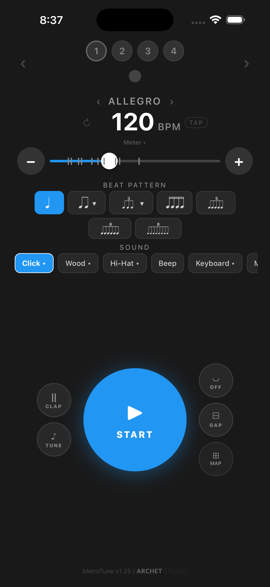
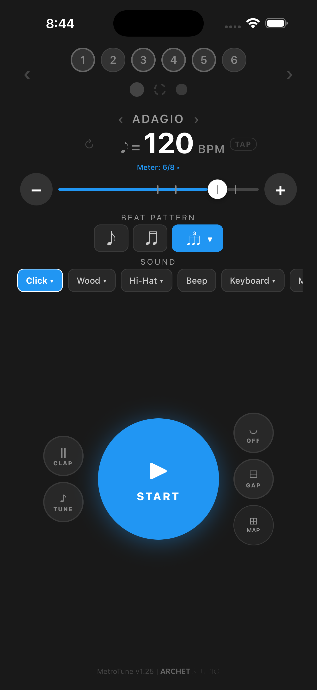
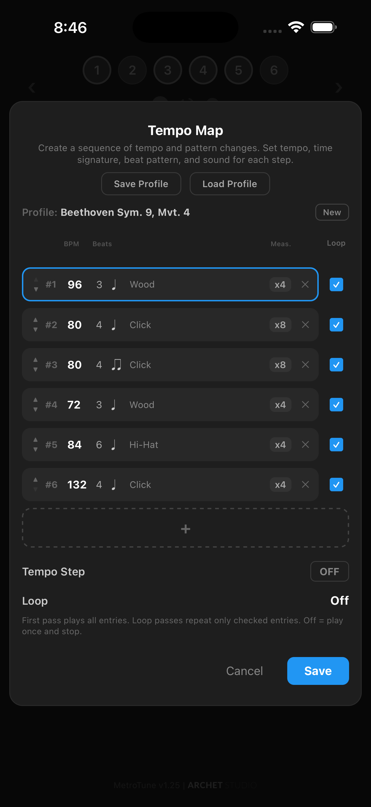
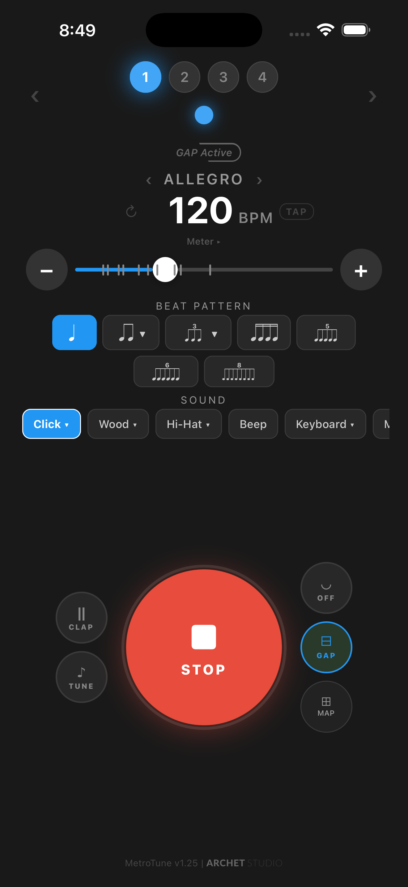
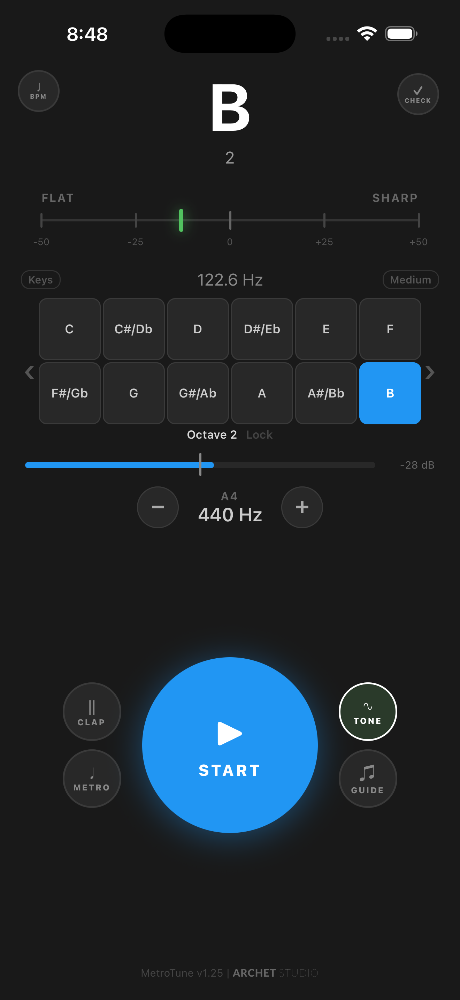

29 Sound Options
Click, wood, hi-hat, kick, cowbell, rimshot, claves, beep, keyboard, marimba, xylophone, and more — plus vibrate and flash modes.
Precision Metronome & Tuner
The most feature-complete free metronome and tuner app. Build custom rhythmic patterns, train with compound meters, program tempo sequences, and go hands-free with double-clap detection.
Whether you're a beginner learning time signatures or a professional drilling complex rhythms, MetroTune adapts to your needs.
Free with optional rewarded ads — no subscriptions.

Most metronome apps stop at simple 4/4 clicks. MetroTune is a full practice system built for real musicians.
Play in 6/8, 7/8, 5/8, 9/8, 12/8, and more — with automatic accent groupings. The beat-unit-aware engine adapts BPM limits and subdivisions to the selected time signature.
Tap any beat circle to set custom accents. Tap individual subdivision dots to mute specific positions and create any rhythmic pattern — a feature no other metronome app offers.


Program sequences of tempo, meter, beat pattern, sound, and measure count that play automatically. Perfect for practicing pieces with tempo changes or building structured warm-up routines.
Train your internal clock by alternating between audible clicks and silence. Stay in tempo during the gap, then check yourself when the click returns.


Real-time pitch detection with a flat/sharp gauge, scrollable keyboard layout, and customizable reference pitch (A4 = 440 Hz default).
Clap twice to start or stop the metronome without touching the screen. MetroTune uses advanced signal processing to distinguish real claps from metronome clicks and instrument sounds.

Click, wood, hi-hat, kick, cowbell, rimshot, claves, beep, keyboard, marimba, xylophone, and more — plus vibrate and flash modes.
Female and male voice options count beats aloud. Useful for beginners learning to internalize time signatures.
6 base themes (Rose, Ocean, Emerald, Amber, Teal, Grey) and 6 pastel themes (Pink, Sky, Mint, Honey, Aqua, Mono).
Tap to detect tempo from live performance. MetroTune averages the interval and shows BPM in real time.
English, Korean, Japanese, Vietnamese, Spanish, French, German, Indonesian, Portuguese, Thai, Chinese (TW/HK), and more.
No need for separate apps. Practice with pitch checking while keeping time, or use guide tone loop alongside the metronome.
A unique intonation trainer that confirms when you hold a note in-tune for a configurable duration. Set tolerance, hold time, and confirmation sound.
Watch one short ad to unlock all premium features for 24 hours. No recurring charges, no paywalls on core functionality.
We're actively building. If you have a feature idea, improvement, or something you wish your metronome could do, we'd love to hear it.
Available now on iOS and Android. Free to download.